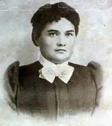
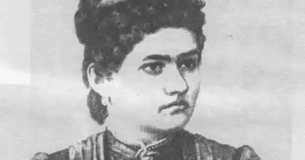

Євгенія Іванівна Ярошинська народилася в селі Чуньків Кіцманського повіту Буковини (нині Заставнівський район Чернівецької області). Закінчила 6 класів Чернівецької гімназії й 14 років поспіль вчителювала по селам Буковини: спочатку в народній школі с.Брідок, пізніше – в с.Раранча (нині с.Рідківці), де її батько був управителем школи. Одночасно займалась збором і записом народних пісень, збірка яких під заголовком "Народні пісні з-над Дністра" вийшла друком у 1972 р.
Крім того, Ярошинська була активною діячкою жіночого руху, брала активну участь у діяльності товариства "Жіноча громада", була першою організаторкою осередків жіночого руху в селах Брідок і Раранча. У 1887 р. стає членом товариства "Руська школа", яке займалося виданням підручників та позакласної літератури для школярів і долучається до його діяльності, зокрема організовує та проводить наради, конференції.
Друкуватися почала у 1886 р. Як і більшість буковинських письменників того часу (Ю. Федькович, С. Воробкевич, О. Кобилянська), свою літературну діяльність розпочала німецькою мовою. На шлях української літератури Ярошинська стає перш за все під впливом першої україномовної газети краю "Буковина", яка згуртувала навколо себе прогресивних українських діячів культури. В літературних творах Ярошинської переважали сцени з життя народу, побутові реалістичні нариси, оповідання з життя жінок, новели, нариси та оповідання навчально-виховного характеру для дітей. Її статті й оповідання охоче публікувалися в львівському ілюстрованому літературно-науковому журналі "Зоря", у віденській газеті "Руська Правда", в часописі "Дзвінок", у газетах "Буковина", "Народ", "Батьківщина" та ін. Проте, одними з перших у 1886 р. в "Бібліотеці для молодежи*" були опубліковані прислів'я письменниці. Результати своїх досліджень та роздумів щодо виховання дівчат в буковинських сім'ях Ярошинська публікує в німецькомовному педагогічному журналі "Буковинська школа" (1904). 21 жовтня 1904 р. у віці 36-ти років Євгенія Ярошинська несподівано пішла з життя від перитоніту. Померла у місцевому шпиталі, похована в м.Чернівці.